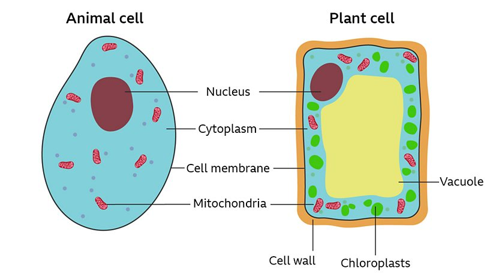

Home Biology Molucules about me
What’s in a cell?
Cell membrane – this surrounds the cell and allows nutrients to enter and waste to leave it.
Nucleus – this controls what happens in the cell. It contains DNA, the genetic information that cells need to grow and reproduce.
Cytoplasm – this is a jelly-like substance in which chemical reactions happen.
Mitochondria – these are the powerhouse of the cell. They are structures where respiration takes place.
Cell wall - this is an outer structure that surrounds the cell and gives it support.
Vacuole - this is a space within the cytoplasm of plant cells that contains sap.
Chloroplasts - these contain chlorophyll and are the site of photosynthesis.
